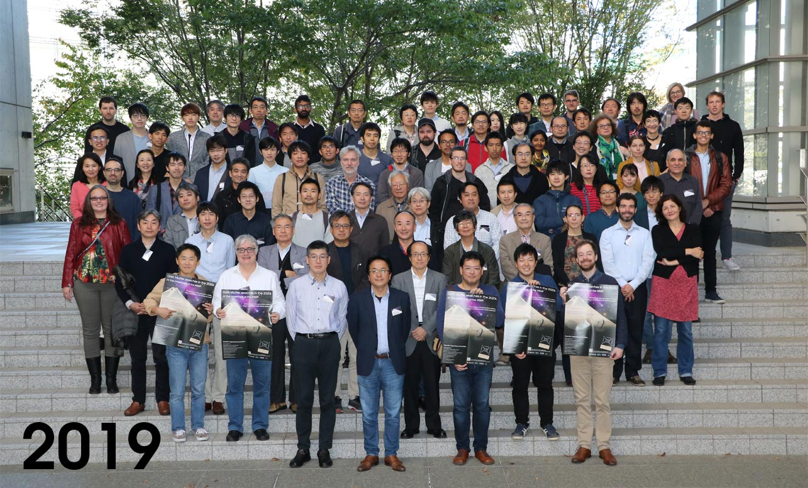
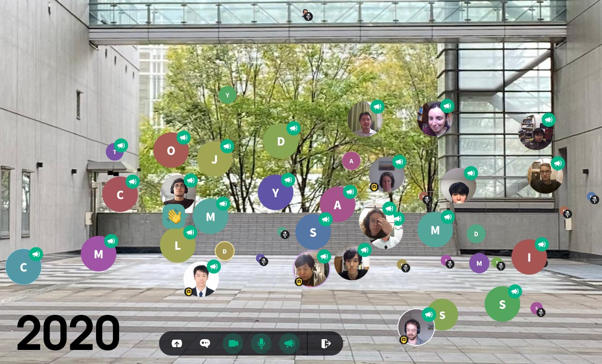

Kashiwa Dark Matter symposium 2020
16-19 November 2020 virtual #dm2020kashiwa
Updates
 {kind=link}
{kind=link}
Thanks to everyone who attended & helped organizing the symposium!
20/11: We would like to thank all speakers, attendees, chairs, and organizers for four wonderful days of presentations and discussion. We will soon publish the recorded talks here and on our YouTube channel, with permission of the speakers. We will also reach out soon to all participants for some short feedback; you can also write us in our #feedback channel on Slack or drop us an email.19/11: We are happy to announce that Leonie Einfalt from University of Vienna has been awarded with the prize for the best poster presentation at the Kashiwa Dark Matter symposium 2020. Congratulations, Leonie! The best poster was voted by all participants, and sponsored by Physics by MDPI.
18/11: Don't miss the poster prize awarding and group picture in our coffe break at 11:30 UTC tomorrow on Thursday, 19/11.
17/11: Find all the nice poster pitches on our YouTube channel!
12/11: Connection details and further information have been sent to all participants. If you did not receive any information, please contact loc@2020.kashiwa-darkmatter-symposia.org.
11/11: Registration is now closed. However, we will stream many symposium talks live on YouTube.
03/11: Thanks a lot for all the great abstract submissions! Everybody who has submitted an abstract should have received today a notification upon oral or poster presentation acceptance. If you did not receive a notification, please contact loc@2020.kashiwa-darkmatter-symposia.org.
30/10: Abstract submission is now closed, but Registration remains open until November 10. Registration will allow to join the presentations and to participate in discussions on Zoom, the virtual coffee breaks, and poster presentations.
22/10: The symposium session schedule and times are now fixed, see Schedule.
Rationale
In 2019, over 100 students, Postdocs, and senior scientists from all over the world came together at Kashiwa campus near Tokyo to discuss the status of the searches for dark matter. After a year has now passed full of exciting results, the nature of dark matter is still elusive. To ultimately solve the dark matter mystery, a joint effort is needed by indirect, direct and collider experiments. To foster the exchange between the fields and to exchange recent progresses in theory and experiment, we have now established a regular series of yearly meetings: the Kashiwa dark matter symposia. This year in 2020, the symposium will be virtual.
The goal of the symposium series is to bring together international researchers from all relevant experimental and theoretical fields in current and future dark matter searches. This year, we like to open the discussion on alternative dark matter candidates beyond the WIMP paradigm, including a dedicated session on axions and axion-like particles.
Main Topics:
- Dark matter theory
- Collider experiments for dark matter searches
- Dark matter direct detection experiments
- Dark matter indirect detection experiments
- Astrophysical constraints on dark matter
- Axions and axion-like particles (ALPs)
We encourage especially young researchers and students to attend and to present at the symposium.
Highlight talks
- Tobias Binder (Kavli IPMU, the University of Tokyo)
- Oleg Brandt (University of Cambridge)
- Francesca Calore (LAPP Annecy)
- Jodi Cooley (Southern Methodist University)
- Mariangela Lisanti (Princeton University)
- Manuel Meyer (ECAP, University of Erlangen-Nürnberg)
- Marc Schumann (University of Freiburg)
- Masaki Yamada (Tohoku University)
Registration and call for abstracts
The deadline for registration was November 10, 2020, 23:59 UTC.
The deadline of the call for abstracts was October 30, 2020, 23:59 UTC. Applicants for contributed presentations have been notified early November on the presentation's acceptance.
SOC & LOC
Scientific Organising Committee:
- Shoji Asai (University of Tokyo/CERN)
- Kohei Hayashi (Tohoku University, co-chair)
- Moritz Hütten (Max Planck Institute for Physics, Munich; co-chair)
- Masahiro Ibe (ICRR, the University of Tokyo)
- Masahiro Kawasaki (ICRR/Kavli IPMU, the University of Tokyo)
- Shigeki Matsumoto (IPMU)
- Kentaro Miuchi (Kobe University)
- Shigetaka Moriyama (ICRR/Kavli IPMU)
- Koji Terashi (U. Tokyo/CERN)
- Masahiro Teshima (ICRR/Max Planck Institute for Physics)
- Masaki Yamashita (ISEE, Nagoya University)
- Tatsuo Yoshida (Ibaraki University)
Local Organising Committee:
- Kohei Hayashi (Tohoku University)
- Moritz Hütten (Max Planck Institute for Physics)
- Midori Sugahara (ICRR)
- Diana Werner (Max Planck Institute for Physics)
We are extremely thankful to Stephen Wilkins from the University of Sussex to provide us with a template of the website system. Please also check out the recent SAZERAC online conference, using the same framework, and the recordings of the many great talks at that conference.
Poster
Code of Conduct
(Adapted from SAZERAC) Attendance at the Kashiwa Dark Matter symposium 2020 is a privilege, and attendees are expected to behave professionally. The symposium organisers are committed to providing an atmosphere that encourages the free expression and exchange of scientific ideas.
By participating in the Kashiwa Dark Matter symposium 2020 as an attendee or presenter, you agree to abide by this code of conduct. Failure to adhere to this code of conduct in all circumstances related to the symposium, including in the online sessions, or any in person, telephone, or other electronic communication, will result in removal from all symposium events.
Our scientific community values all members, regardless of (alphabetically) age, cultural background, disability, ethnicity, gender identity, marital status, nationality, physical appearance, political affiliation, pregnancy, race, religious beliefs, sexual orientation, socio-economic status, and status as a caregiver (including as a parent). The ability to allow our community to share its research results and promote the careers of junior attendees depends critically on maintaining a culture of inclusivity, where all voices are respected and heard.
The symposium organisers will not tolerate verbal, nonverbal harassment or bullying of any kind and will give high priority on eliminating sexual harassment in any form from the workplace. Behavior and language acceptable to one person may not be to another. Members must make every effort to ensure that words and actions communicate respect for others, regardless of opinion regarding the person or their scientific results.
During symposium sessions, the Session Chair is in charge. Speakers must keep to their allotted time, ideally using a timer. If they exceed their time, their question time will be reduced, and if they speak through all of the question time, they will be disconnected. As listener, when asking questions to speakers, please be professional, courteous, and polite. If a participant engages in obvious harassing behavior during the presentations, the Chairs may take any action they deem appropriate, including warning the offender or removing them from the conference.
Participants who believe that they have witnessed or been negatively impacted by a possible violation of the Code of Conduct should contact the SOC by emailing soc@2020.kashiwa-darkmatter-symposia.org (all persons listed above) to initiate a complaint, including any available evidence (e.g., screenshots) in their email. The SOC will treat the appeal at maximum discretion. If a majority of the SOC concurs that this code has been violated, the offender will be immediately removed from all symposium-related events. The offender will then be contacted by the SOC, and will have the opportunity to appeal the decision. This appeal will be considered by the SOC, whose decision will be final.
Sponsors
-
This symposium is supported in part by:
- MEXT Grant-in-Aid for Scientific Research on Innovative Areas:
- Grant-in-Aid for Scientific Research (S):
- Grant-in-Aid for Scientific Research (B):
16K21730 for Shoji Asai (PI, main hosts)
19H05802 for Shigetaka Moriyama (co-PI, main hosts)
18H05542 for Masahiro Ibe (PI)
17H06131 for Masahiro Teshima (PI, main hosts)
20H01895 for Shigeki Matsumoto (PI), Kohei Hayashi (co-PI)
17H02878 for Shigeki Matsumoto (co-PI)
The poster prize is kindly sponsored by Physics.


Contact Us
To get in touch with the organisers, please email us at loc@2020.kashiwa-darkmatter-symposia.org.